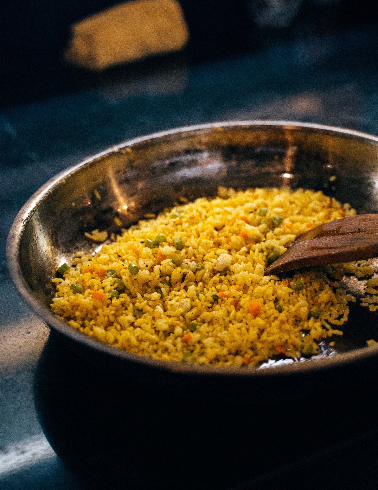

Fried Rice

Description
Fried rice is a dish that is made by stir-frying pre-cooked rice with a variety of other ingredients,
such as vegetables, eggs, meat, and/or seafood.
The dish is believed to have originated in Chinabut is now a popular staple in many Asian cuisines.
Ingredients
- 2 cup of chicken stock
- 1 cup of diced veggies, preferably:
- spring onions
- carrot
- peas
- green beans
- green pepper
- 1/2 cup of dried currry and thyme
- 1/4 of garlic
- 1/4 of ginger
- 2 teaspoon of dried thyme
- 2 teaspoon curry powder
- seasoning cubes
- vegetable oil
Steps
- Add the rice stock into the pot and allow to heat
- Add 2 cups of stock to the rice, stir and cook on low heat, for 12-15 minutes,
or till stock is
absorbed and rice has softened a bit. Let cool for 5-10 minutes, then set aside.
-
In another pot, heat up 2 tablespoons oil till hot, then add the hard vegetables
Season with a pinch of salt and stir fry for 2-3 minutes before adding the mixed vegetables.
Let cook, another 2-3 minutes.
-
Season to taste with curry powder, dried thyme,
-
Add the rice and stir gently, but well, so rice and vegetables combine and cook
on medium heat for 3 minute
-
Check for doneness and seasoning, and adjust accordingly. Add more stock if required.
-
When rice is ready, stir in chopped liver,Remove from heat and serve